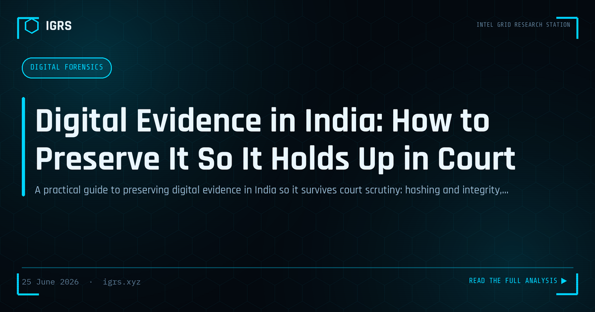

Digital Evidence in India: How to Preserve It So It Holds Up in Court
Preserving Digital Evidence for Court
The value of digital evidence depends entirely on how it is preserved. Evidence that is altered, mishandled, or improperly documented during collection may be challenged or excluded, regardless of what it shows. For Indian investigators, sound evidence preservation is the foundation on which admissible, court-ready digital evidence is built. This guide focuses specifically on the preservation practices that ensure digital evidence survives legal scrutiny.
Why Preservation Is Critical
Digital evidence is fragile and easily altered — opening a file changes its metadata, powering on a device modifies data, and improper handling can destroy or taint evidence. Once altered, evidence may be challenged as unreliable. Proper preservation freezes the evidence in its original state and documents every step, allowing investigators to demonstrate to the court that what is presented is exactly what was found, unaltered by the investigation. This integrity is the basis of admissibility.
Preservation Principles
| Principle | Practice |
|---|---|
| Work on copies | Never analyse originals |
| Hash verification | Prove evidence is unchanged |
| Chain of custody | Document all handling |
| Write protection | Prevent accidental alteration |
Forensic Imaging
The foundation of preservation is forensic imaging — creating an exact, bit-for-bit copy of the original media. Investigators then work on the image, leaving the original untouched. Write blockers prevent any alteration during imaging. This approach ensures the original evidence is preserved in its found state while analysis proceeds on the copy, allowing the original to be re-examined if needed and protecting against claims that the investigation altered the evidence.
Hash Verification
Cryptographic hashing is central to demonstrating integrity. By calculating a hash value of the evidence at collection and again later, investigators prove the evidence is unchanged — identical hashes confirm no alteration. This mathematical verification provides strong, objective proof of integrity that is difficult to dispute. Recording hash values at each stage of handling creates a verifiable record that the evidence presented in court is exactly what was collected.
Documenting Chain of Custody
Chain of custody documentation records every person who handled the evidence, when, why, and how, from collection through presentation. This unbroken record demonstrates that the evidence was properly controlled and not tampered with. Gaps or ambiguities in the chain of custody create doubt that opposing parties exploit to challenge admissibility. Meticulous, contemporaneous documentation of custody is therefore an essential preservation practice that supports the evidence's reliability.
The Section 63 BSA Certificate
For admissibility in Indian courts, electronic evidence requires certification under Section 63 of the Bharatiya Sakshya Adhiniyam. This certificate attests to the conditions under which the electronic record was produced. Proper preservation supports this certification by establishing and documenting the integrity and handling of the evidence. Without both proper preservation and the Section 63 BSA certificate, electronic evidence risks being ruled inadmissible, making these requirements inseparable in practice.
Building Preservation Discipline
For Indian investigators, evidence preservation is a discipline of consistent, documented practice: imaging originals and working on copies, verifying integrity through hashing, using write protection, maintaining an unbroken chain of custody, and ensuring Section 63 BSA certification. These practices, applied rigorously from the moment evidence is encountered, ensure that digital evidence remains admissible and defensible. In a landscape where digital evidence increasingly determines the outcome of cases, the discipline of proper preservation — turning fragile electronic data into reliable, court-ready evidence — is among the most important competencies an investigator can develop, protecting the integrity of the evidence and the justice it serves.